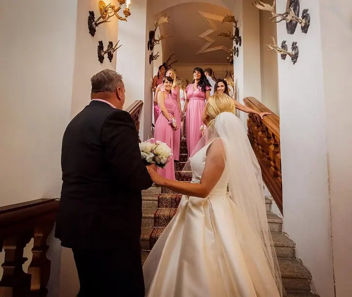

jedna
Svatební fotografie
Celý váš den od příprav nevěsty přes obřad až po první objetí s blízkými. Fotím nenápadně a v teplých, přirozených barvách.

Svatební fotografka a fotografka portrétů · Karlovy Vary, Praha

Jmenuji se Anna Marina a fotím svatby, páry a portréty v Karlových Varech a v Praze. Nejraději mám teplé světlo, přirozené emoce a místa, která mají svou atmosféru.
Více o mně
Co fotím
jedna
Celý váš den od příprav nevěsty přes obřad až po první objetí s blízkými. Fotím nenápadně a v teplých, přirozených barvách.
dvě
Procházka ve dvou lázeňskými parky a uličkami Karlových Varů. Hodí se jako zásnubní focení nebo jen tak pro radost.
tři
Portréty žen i dětí venku v přírodě a v parcích. Klidné tempo a fotky, na kterých vypadáte sami sebou.

Den, ke kterému se budete rádi vracet
Za objektivem
Jsem fotografka z Karlových Varů a jezdím fotit i do Prahy. Mám ráda lázeňské kolonády, staré vily, zámecké sály a parky, kde se dá s párem nebo rodinou pomalu projít a nikam nespěchat.
Na svatbách se snažím být nablízku, ale nepřekážet. Zajímají mě drobné chvíle: podpis oddacího listu, otec čekající u schodů, první objetí po obřadu. Fotky upravuji do teplých, přirozených barev a některé momenty nechávám vyniknout v černobílé.
Ať jde o svatbu, focení ve dvou nebo portrét, chci, abyste se před objektivem cítili dobře. Napište mi, kde a kdy plánujete, a domluvíme se, jak focení pojmout.
Anna
Pošlete mi e-mail s termínem, místem a tím, co si představujete. Ozvu se vám co nejdřív.
Probereme průběh dne nebo focení, místa v Karlových Varech či v Praze a vaše přání.
Fotím v klidu a přirozeně. Na svatbě jsem nablízku, ale nechávám vás užít si den.
Snímky pečlivě vyberu a upravím do teplých, přirozených barev a pošlu vám je online.
Portfolio
Otázky
Ano, kromě Karlových Varů a okolí fotím také v Prahe. O dalších místech se rádi domluvíme.
Nejlépe e-mailem na amarinaphoto@gmail.com. Napište mi datum, místo a o jaké focení máte zájem.
Termín dodání vám řeknu předem podle rozsahu focení. Hotové fotky posílám v online galerii.
Karlovy Vary nabízejí parky, kolonády i výhledy na lesy kolem města. Místo vybereme společně podle toho, co je vám blízké.
Napište pár vět o tom, co si představujete. amarinaphoto@gmail.com